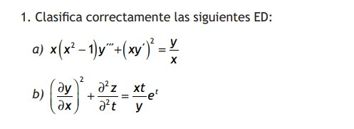
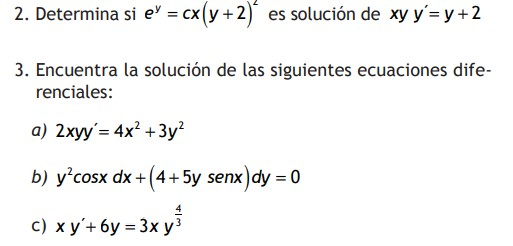
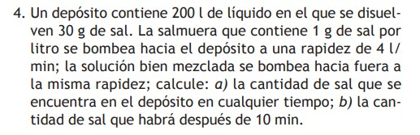

Equipo de Ganadores
Resumen Introduccion
El articulo se basa en brindar un Modelo Educativo Integral y Flexible (MEIF) implementado por las facultades de Ingeniería de la
zona Poza Rica-Tuxpan de la Universidad Veracruzana, busca transformar la educación centrada en el estudiante.
Más que simplemente impartir conocimientos enciclopédicos, este modelo se enfoca en cultivar habilidades, actitudes y herramientas
que capaciten a los estudiantes para un aprendizaje autónomo y constante. Con un enfoque en la formación integral, el MEIF integra tres ejes -teórico,
heurístico y axiológico- para preparar a los estudiantes para los desafíos contemporáneos, mediante la promoción del pensamiento complejo, las ecuaciones diferenciales,
el uso de tecnologías de la información y la comunicación (TIC) y la investigación activa.
Metodologia
La metodología para enseñar ecuaciones diferenciales en el programa de Ingeniería Química se centra en un enfoque activo y contextualizado.
Se diseña un plan de instrucción que identifica las necesidades de los estudiantes y los objetivos de la asignatura, relacionándolos con
su futura práctica profesional. Se estructuran problemas y proyectos basados en situaciones reales, organizados por niveles de dificultad,
con énfasis en la investigación y el uso de tecnología. Cada tarea se considera una microunidad de aprendizaje, con objetivos de desempeño
definidos para cada nivel de habilidad. Esta metodología busca involucrar a los estudiantes
y prepararlos para desafíos profesionales mediante la aplicación práctica de ecuaciones diferenciales.
Después de definir los problemas y proyectos basados en situaciones reales, se establece el
andamiaje como un proceso interactivo donde el maestro guía el aprendizaje del estudiante, actuando como
facilitador, motivador, retador y evaluador. Este andamiaje proporciona apoyo gradual hasta que el estudiante
pueda desenvolverse de manera autónoma. La evaluación se realiza mediante rúbricas vinculadas a los objetivos de desempeño,
para cada tarea y nivel de aprendizaje. Se diseñan dos actividades básicas para alcanzar los objetivos:
la entrega de informes de investigación y la resolución de un problemario.
Resultados
Se evaluaron tres objetivos de desempeño en la entrega de informes de investigación y resolución de un problemario como parte del primer examen parcial en ecuaciones diferenciales para estudiantes de Ingeniería Química.
En el primer objetivo, que abordó temas como la interpretación de ecuaciones diferenciales y el método de las isoclinas, el 55% de los informes fueron aceptables, el 30% buenos y solo el 15% excelentes, debido a las dudas iniciales de los estudiantes.
En el segundo objetivo, que incluyó conceptos como el método de separación de variables y funciones homogéneas, se vio una mejora, con el 35% de los informes aceptables, el 35% buenos y el 30% excelentes.
El tercer objetivo, centrado en problemas de ingeniería química modelados con ecuaciones diferenciales de primer orden, mostró que el 65% de los informes fueron excelentes, el 20% aceptables y el 15% buenos.
Ecuaciones en el articulo:


